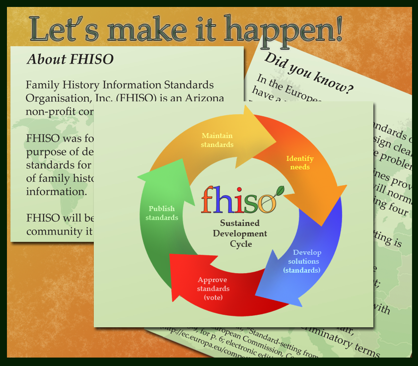

Family History Information Standards Organisation, Inc. (FHISO) was incorporated earlier this year to act as as the community-owned standards organization serving genealogists, world wide. Standards organizations depend on broad support—that includes support across some of the entrenched territorial lines we find in our community.
Most other sectors have figured out how to bridge those territorial lines— they are already reaping the benefits of open, transparent and democratically developed standards. If we work together as a community, we too can build bridges.
So, let’s get started. The position paper/comment draft, “Why FHISO?” being released today, should help get the dialog going.
Why FHISO v01-04.pdf
Whether you agree with it, dispute it or want to add to it, we want to hear from you. Help us pass it around. We’d like comments from innovators and users alike. And around the globe, too, so please share it with those you know and with those you would like to know better.
One community, one standard. We are stronger and better together. Let's sort out the issues and start making things happen.
(1) We've opened up this wiki page at BetterGEDCOM. It's a wiki, so if you are not already a member, join up and comment.
(2) Don't be shy! Comments about “
Why FHISO?” are welcome on the FHISO blog, but if you prefer, comments via e-mail are welcome, too. fhiso@fhiso.org.
(3) FHISO representatives attend the open BetterGEDCOM meeting held Monday mornings (1:00 EDT/US). A part of each meeting is set aside for questions, answers and discussion about FHISO.
Developers+Meeting
(4) Join the FHISO organizing effort. We are now a nine member international group; usually on five different continents, though today we are on six. Most of our work is done asynchronously (e-mail or common workspace). We hold a GoToMeeting session weekly (Wednesday at 1:30 EDT/US); attendance is encouraged, but optional. Those interested should email fhiso@fhiso.org.
(5) Speak out and let us know about it. If you blog or develop a posting about FHISO, send a notice to us at fhiso@fhiso.org.